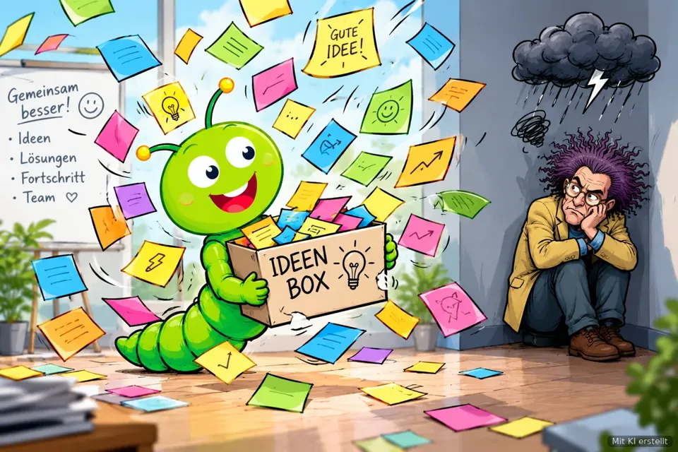
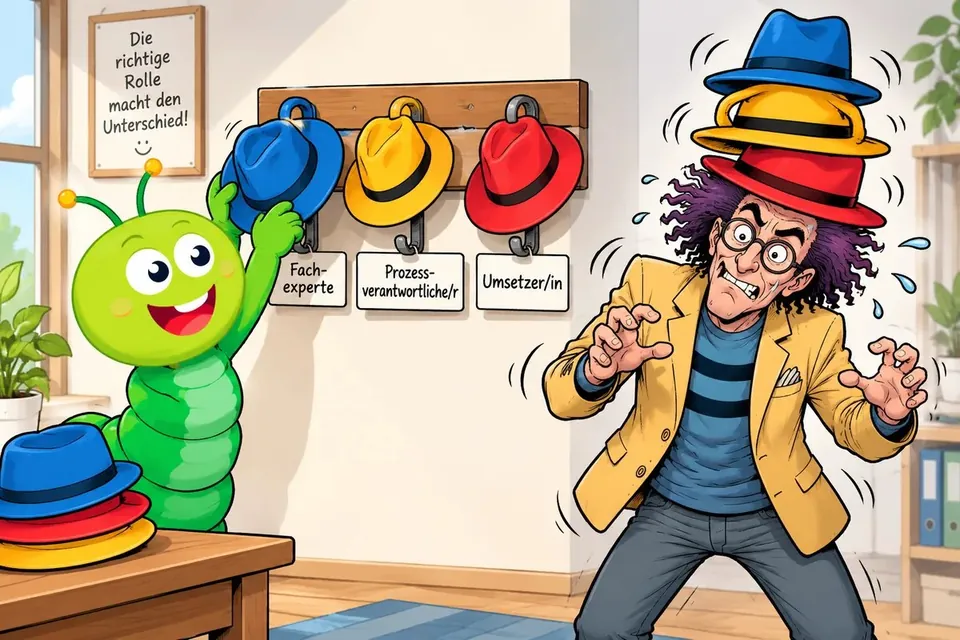

Neue gut einarbeiten
5 kurze Lektionen, zusammen etwa 31 Minuten
Für Teams und Führungskräfte
Dein Team soll Abläufe verstehen, aufschreiben und verbessern, aber niemand hat Zeit für ein Tagesseminar? Der Prozesswurm passt in die Teamrunde: zehn Minuten, ein Thema, ein Handgriff.

Mit KI erstelltEin Klick öffnet den Lernpfad in der Lernwerkstatt, dort siehst du alle Lektionen. Den Link kannst du direkt in den Team-Chat oder in eine E-Mail kopieren.
5 kurze Lektionen, zusammen etwa 31 Minuten
5 kurze Lektionen, zusammen etwa 31 Minuten
5 kurze Lektionen, zusammen etwa 31 Minuten
5 kurze Lektionen, zusammen etwa 36 Minuten
Für die nächste Teamrunde

Mit KI erstelltMontags-Wurm vom 26. Oktober 2026 Zuständigkeit
Über 70 Arten von Beauftragten, und wer kümmert sich wirklich? Dazu die Hutliste in drei Schritten.